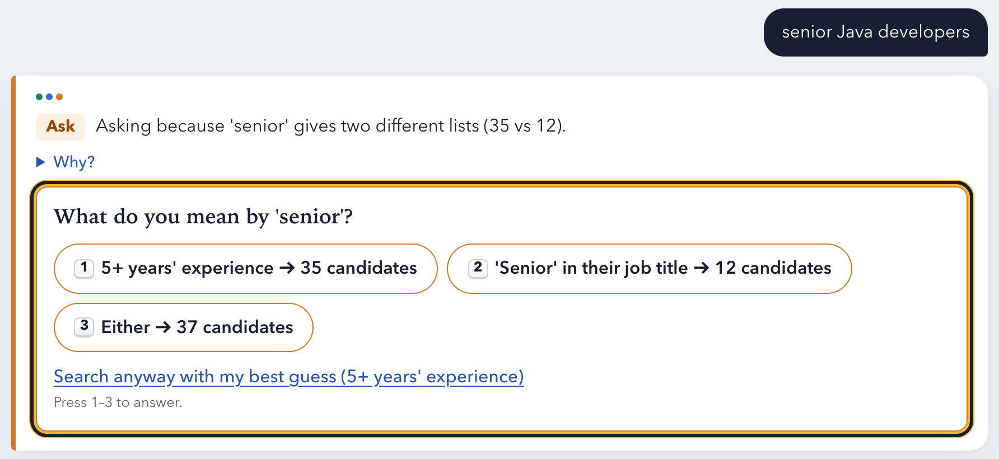
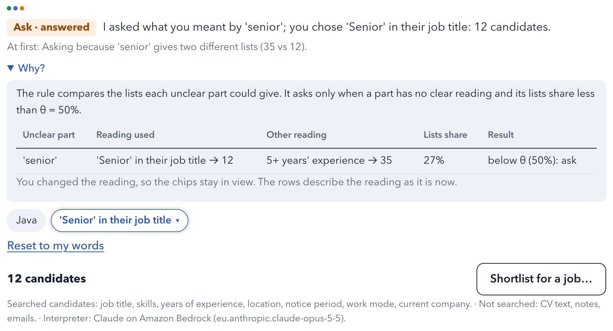
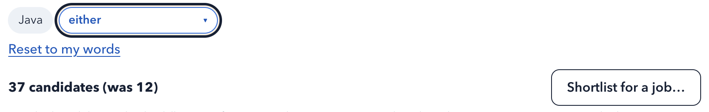

Request: senior Java developers · real screenshots of the prototype · interpreter: a live model, Claude on Amazon Bedrock (implemented)



Key. P = the person acts, S = the system acts. Gulf of execution: can I say what I want? Gulf of evaluation: can I tell what it did? Signifier: what on screen shows what is possible. Feedback: what on screen shows what happened. Planned, not built: a free-text 'Other…' answer.